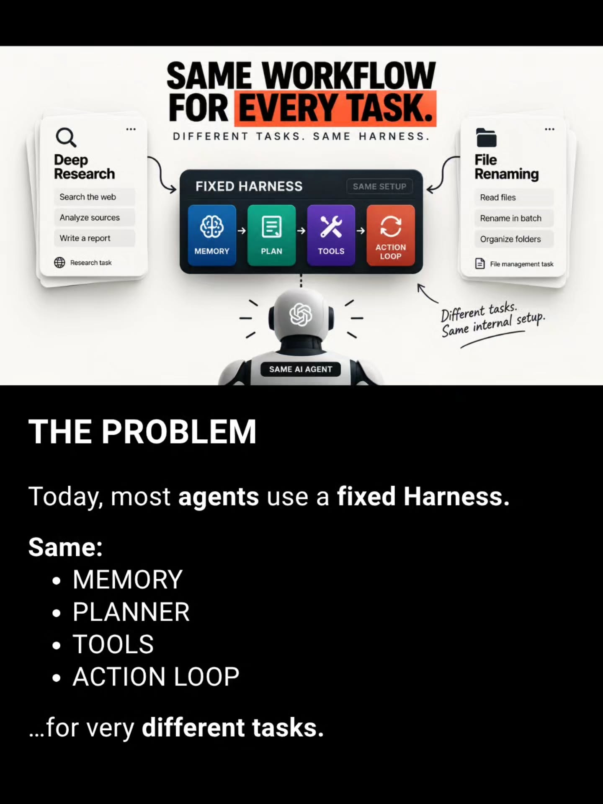
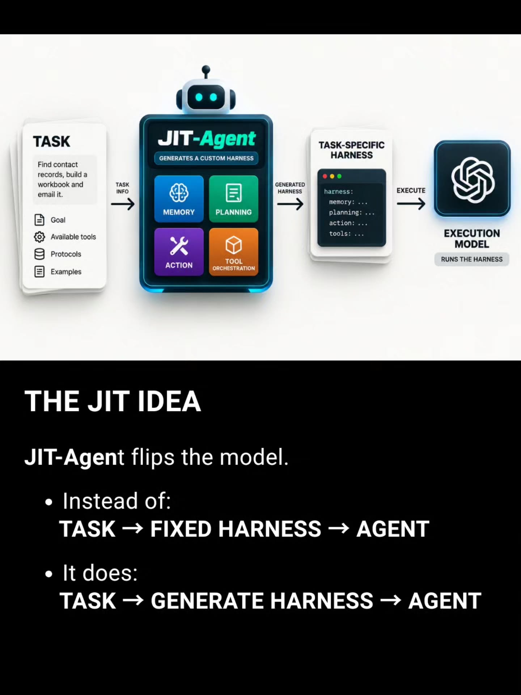
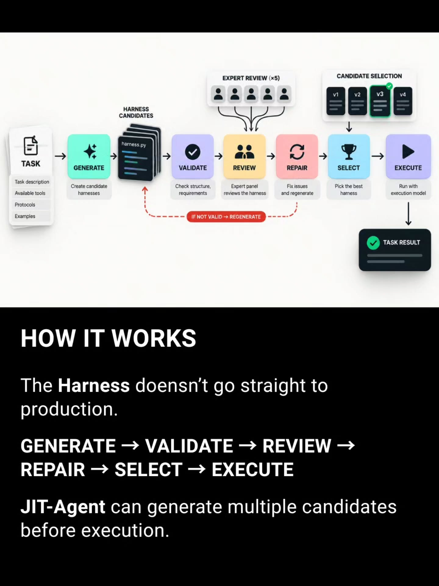
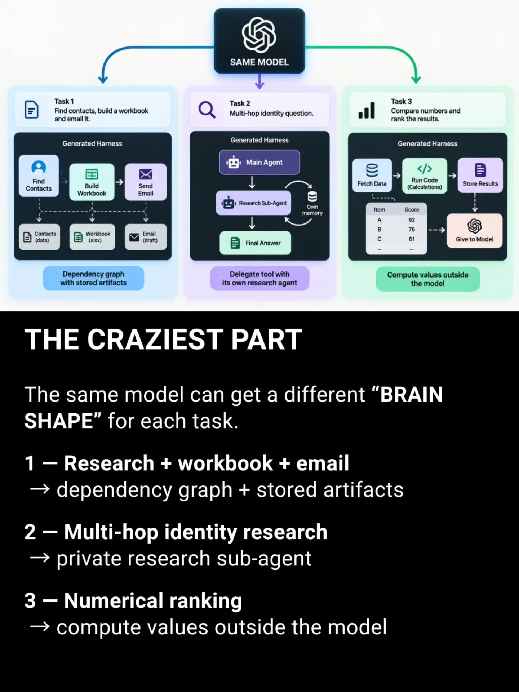
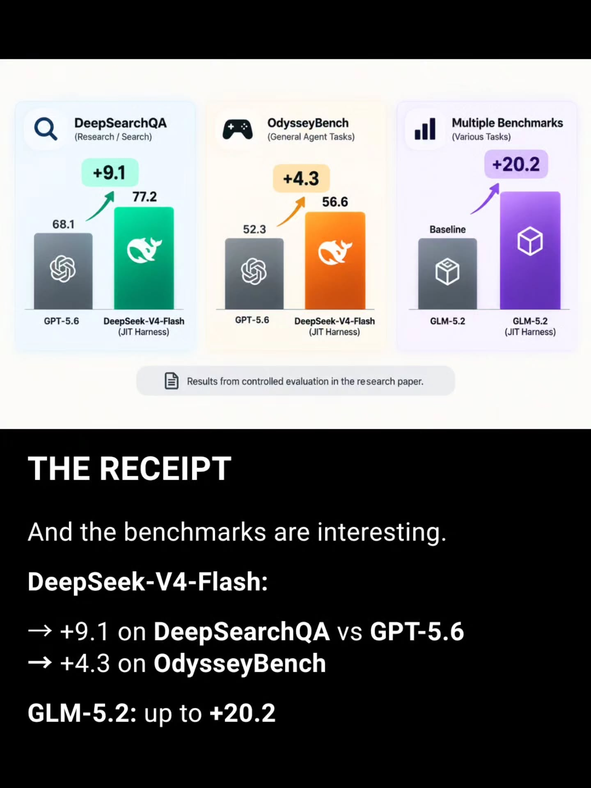

Instagram Post
What if your AI agent could build its own...
carousel (7 slides) (enriched by ClaudeClaw)
Summary
Good Ideas Faster | SAME WORKFLOW FOR EVERY TASK | TASK Find contact records, build a workbook and email it | TASK Task description Available tools Protocols Examples ... | SAME MODEL Task 1 Find contacts, build a workbook and ema... | DeepSearchQA (Research / Search) +9.1 77.2 68.1 GPT-5.6 D... | THE BIG INSIGHT The model may not be the main thing to scale
Caption
What if your AI agent could build its own workflow for every task? 👀
That’s the idea behind JIT-Agent — an open-source research system that generates a task-specific agent harness before the work begins.
Instead of forcing every task through the same setup, it can generate and evaluate different combinations of memory, planning, actions, and tools for the job.
And the benchmark results are interesting: the JIT-Agent paper reports gains such as +9.1 on DeepSearchQA and +4.3 on OdysseyBench in its controlled evaluations.
The bigger idea?
Maybe the next step in AI agents isn’t only better models — it’s better workflows built around them.
💬 Comment “REPO” and we’ll send you the JIT-Agent repo link.
Save this for later, share it with someone building AI agents, and follow @vyzual.ai for more open-source AI discoveries, technical breakdowns, and useful tools.
1
Good Ideas Faster. MEMORY PLANNING TOOLS ACTION EXECUTE SOMEONE JUST OPEN SOURCED JIT-AGENT – AN AI THAT BUILDS ITSELF A CUSTOM WORKFLOW FOR EVERY TASK. @vyzual.ai
A man with a surprised expression looks at a laptop screen displaying a glowing diagram of an AI workflow, featuring the GitHub logo, a robot, and modules for memory, planning, tools, and action, all leading to an execute button.
2
SAME WORKFLOW FOR EVERY TASK. DIFFERENT TASKS. SAME HARNESS. Deep Research Search the web Analyze sources Write a report Research task FIXED HARNESS SAME SETUP MEMORY PLAN TOOLS ACTION LOOP File Renaming Read files Rename in batch Organize folders File management task Different tasks. Same internal setup. SAME AI AGENT THE PROBLEM Today, most agents use a fixed Harness. Same: • MEMORY • PLANNER • TOOLS • ACTION LOOP ...for very different tasks.
The image shows a diagram illustrating a "fixed harness" workflow for an AI agent, with examples for "Deep Research" and "File Renaming" tasks, followed by text explaining "THE PROBLEM" with this approach.
3
TASK Find contact records, build a workbook and email it. Goal Available tools Protocols Examples TASK INFO JIT-Agent GENERATES A CUSTOM HARNESS MEMORY PLANNING ACTION TOOL ORCHESTRATION GENERATED HARNESS TASK-SPECIFIC HARNESS harness: memory: ... planning: ... action: ... tools: ... EXECUTE EXECUTION MODEL RUNS THE HARNESS THE JIT IDEA JIT-Agent flips the model. • Instead of: TASK → FIXED HARNESS → AGENT • It does: TASK → GENERATE HARNESS → AGENT
A diagram illustrates the JIT-Agent process, showing a task flowing through a JIT-Agent (with components like Memory, Planning, Action, Tool Orchestration) to generate a task-specific harness for an execution model, accompanied by text explaining the JIT-Agent concept.
4
TASK Task description Available tools Protocols Examples GENERATE Create candidate harnesses HARNESS CANDIDATES harness.py EXPERT REVIEW (x5) VALIDATE Check structure, requirements REVIEW Expert panel reviews the harness REPAIR Fix issues and regenerate CANDIDATE SELECTION v1 v2 v3 v4 SELECT Pick the best harness EXECUTE Run with execution model IF NOT VALID -> REGENERATE TASK RESULT HOW IT WORKS The Harness doesn't go straight to production. GENERATE -> VALIDATE -> REVIEW -> REPAIR -> SELECT -> EXECUTE JIT-Agent can generate multiple candidates before execution.
A white background displays a flowchart diagram detailing a multi-step process for "Harness Candidates" and "Task Result," while a black section below provides a textual explanation titled "HOW IT WORKS."
5
SAME MODEL Task 1 Find contacts, build a workbook and email it. Generated Harness Find Contacts Build Workbook Send Email Contacts (data) Workbook (xlsx) Email (draft) Dependency graph with stored artifacts Task 2 Multi-hop identity question. Generated Harness Main Agent Research Sub-Agent Own memory Final Answer Delegate tool with its own research agent Task 3 Compare numbers and rank the results. Generated Harness Fetch Data Run Code (Calculations) Store Results Items Score A 92 B 76 C 61 Give to Model Compute values outside the model THE CRAZIEST PART The same model can get a different “BRAIN SHAPE” for each task. 1 – Research + workbook + email → dependency graph + stored artifacts 2 – Multi-hop identity research → private research sub-agent 3 – Numerical ranking → compute values outside the model
A diagram illustrates how a single AI model can adapt to three different tasks, followed by a textual explanation of this concept.
6
DeepSearchQA (Research / Search) +9.1 77.2 68.1 GPT-5.6 DeepSeek-V4-Flash (JIT Harness) OdysseyBench (General Agent Tasks) +4.3 56.6 52.3 GPT-5.6 DeepSeek-V4-Flash (JIT Harness) Multiple Benchmarks (Various Tasks) +20.2 Baseline GLM-5.2 GLM-5.2 (JIT Harness) Results from controlled evaluation in the research paper. THE RECEIPT And the benchmarks are interesting. DeepSeek-V4-Flash: → +9.1 on DeepSearchQA vs GPT-5.6 → +4.3 on OdysseyBench GLM-5.2: up to +20.2
A presentation slide shows three bar charts comparing AI model performance on various benchmarks, with a lower section summarizing the results in text.
7
THE BIG INSIGHT The model may not be the main thing to scale. The Harness might be. • Today: BIGGER MODEL • JIT-Agent explores: BETTER TASK-SPECIFIC HARNESS Memory • Planning • Actions • Tools
A presentation slide with white text on a black background, discussing "THE BIG INSIGHT" about scaling models and harnesses, with navigation dots and an arrow icon at the bottom.
All slides




